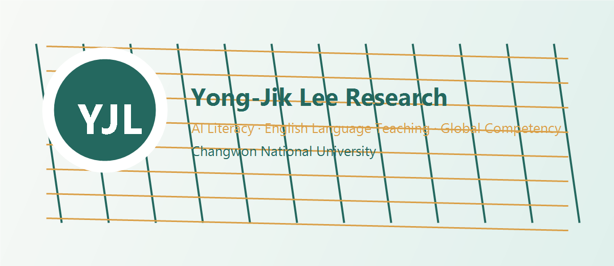

Changwon National University
이용직 교수
교육, 언어, AI 리터러시 연구 아카이브 Publications · Projects · Career · Academic Profile
PROFILE
더보기
국립창원대학교
사림아너스학부(자율전공학부)
Artificial intelligence · English language teaching · Global competency
19논문실적
1연구과제
4경력
Profile
연구자 기본 정보
이름이용직 / Yong-Jik Lee
소속국립창원대학교 / Changwon National University
부서사림아너스학부(자율전공학부) / School of Sarim Honors (Undeclared Majors)
연구 분야
Artificial intelligence (AI)AI literacyEnglish language teaching (ELT)English-medium instruction (EMI)Global competencyInterdisciplinary studiesConvergence education
연구분야
연구 분야영어교육, 교사교육, AI/디지털교육, EMI 및 다중언어 교육 맥락을 연결해 온 연구자
교육 철학영어교육 이론과 실제 수업 설계, AI/디지털 도구 활용, 학습자 다양성 이해를 연결하는 교육
진행중 연구 주제AI/디지털교육 기반 영어교사교육, 영어교육과정 운영, 국제학술 연구성과 확산
논문실적
English Teachers' Experiences of Participating in a Long-Term Professional Development for Teaching English through English
교사교육영어교육
Preparing Mainstream Teacher Candidates to Work with English Language Learners: Dissonance and Care Developing Agency
교사교육영어학습자
International Students' Experiences of Content Language Integrated Learning in a Korean University: Focusing on Korean as a Medium of Instruction
EMI국제학생
Korean Pre-service Teachers' Flipped Learning Experiences in a Teacher Education Program
교사교육
Rethinking linguistic capitals and asset-based language learning: an examination of bilingual Korean-Chinese instruction for international students in South Korea
언어교육다중언어
Reimagining raciolinguistic ideologies through an analysis of localized language-in-education policies in Turkey and Korea
언어교육정책
A multilingualism-as-resource approach in a graduate-level English-medium instruction (EMI) program at a Korean university
EMI다중언어
University students’ perceptions of artificial intelligence-based tools for English writing courses
AI/디지털교육영어쓰기
A case study of implementing generative AI in university’s general English courses
생성형 AI교양영어
Assessing the Impact of Prior Coding and Artificial Intelligence Learning on Non-Computing Majors’ Perception of AI in a University Context
AI/디지털교육
A Case Study of Implementing ChatGPT for University’s General English Courses: Focusing on English Language Learners’ Self-Regulated Learning and Grit
ChatGPT교양영어
An Exploratory Study on English Pre-service Teachers’ AI Literacy
예비교사AI 리터러시
EFL UNIVERSITY STUDENTS’ MOTIVATION, COGNITIVE LOAD,AND SATISFACTION WITH USING GENAI FOR ENGLISH LEARNING
GenAI영어학습
University students’ perspectives on integrating generative AI into English language learning
생성형 AI영어학습
Integrating Generative AI into English Learning: Insights from Korean University EFL Students
DOI10.18823/asiatefl.2026.23.1.10.128
Generative AIEFLEnglish learninghigher education
Cognitive Load and Working Memory in Multimedia Video Podcasts: Effects of Elaborative and Seductive Details
DOI10.3390/jintelligence14050074
video podcastsworking memorycognitive loadmultimedia learning
Examining Artificial Intelligence (AI) Literacy Among First-Year Students in Korean Higher Education
DOI10.5430/jct.v15n2p284
AI literacyGenAIfirst-year studentshigher education
Disciplinary Differences in University Students' AI Adoption: a Technology Acceptance Model Approach
AI adoptionTechnology Acceptance Modelhigher education
Exploring EFL Students' Engagement with Generative AI: Experiences, Perceptions, and Ethical Concerns
EFLGenerative AIethical concernsstudent engagement
연도별 논문 수
연구과제
자율전공학부생의 글로벌 역량 개발을 지원하는 AI 기반 디지털 포트폴리오 시스템 개발 연구
영문명Developing an AI-Enabled Digital Portfolio System to Support Personalized Global Competence for Undeclared-Major Students
분야인문사회기초연구사업 신진연구자 지원사업
기관국립창원대학교
요약자율전공학부 학생들의 글로벌 역량을 체계적으로 진단·관리·강화하기 위한 AI 기반 디지털 포트폴리오 시스템을 개발하고, 글로벌 역량 측정 도구, 맞춤형 학습 경로 추천, 학습분석 기반 피드백 체계를 구축하는 3년 연구과제.
글로벌역량디지털포트폴리오자율전공학부AI기반 개인화 학습학습분석Global competenceDigital portfolioUndeclared-major undergraduatesAI-enabled personalizationLearning analytics
학력
학력
2003.03.01-2009.08.18
문학사 · 영어학전공 · 중앙대학교
2010.08.30-2012.12.12
문학석사 · TESL(테솔)전공 · Indiana State University / 미국) 인디애나주립대학교
2014.08.25-2018.08.14
철학박사 · ESOL/Bilingual Education · University of Florida / 미국) 플로리다대학교
학위논문
박사
AN EXPLORATORY STUDY OF PRE-SERVICE TEACHERS AND THEIR SELF-EFFICACY BELIEFS AS TEACHERS OF ENGLISH LANGUAGE LEARNERS USING MICRO-TEACHING EXPERIENCES
경력
경력
2019.03.01-2020.02.29
조교수 · 극동대학교
교양대학 교양영어수업, 영어몰입프로그램 운영, 학부생 미국 단기 어학연수 지도
2023.09.01-2024.08.30
전임연구원 · 전남대학교
현직교원 AI디지털교과서 교원연수, 연구보고서 작성, 에듀테크의 이해 수업, 해외대학 MOU 협력
2024.09.01-2025.12.31
초빙교원 · 가톨릭관동대학교
영어교육과 수업, 영어교육과정, 영어교수공학, 영어교과교재지도 등
2025.06.01-현재
조교수 · 국립창원대학교
사림아너스학부(자율전공학부) 소속 조교수
수상·학회
수상
학술대상
한국산학기술학회 · 2021.12.03